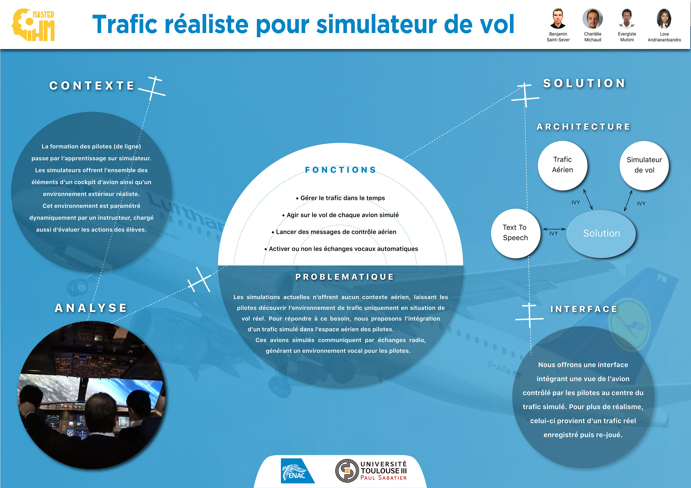
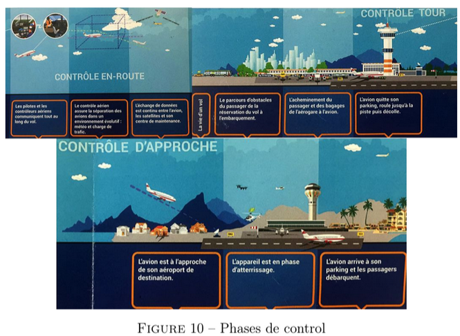
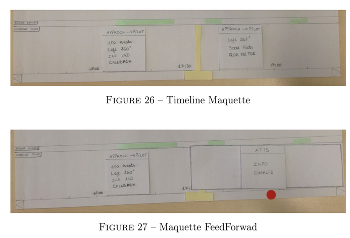
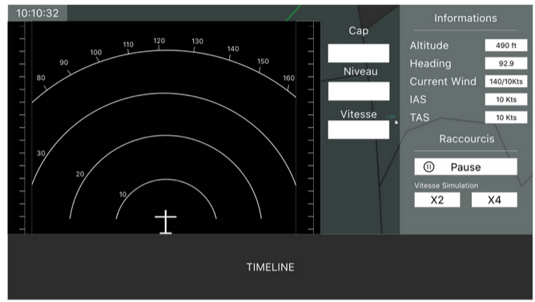
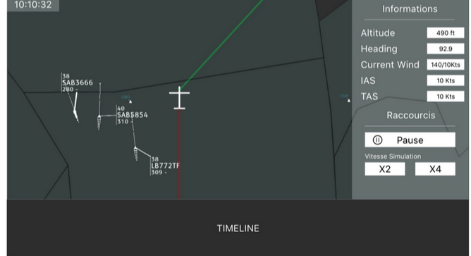

Supervision station for flight simulator
Giving instructors realistic aerial context, designed for non-experts.
Designing a supervision station for flight instructors (ENAC). Primary decision: a compact horizontal timeline to track ATC events without stealing space from the radar view. Secondary decision: reusing the Navigation Display known to instructors rather than inventing an interaction mode.

SYNTHESIS POSTERThe masterpiece poster, a synthesis of the project presented at ENAC.
Flight simulators offered no aerial context: communications with ATC and exchanges between ATC and other aircraft in the sector were absent. Pilots only discovered them in real flight. The challenge was to add this context (realistic ATC messages and vocal environment) while keeping the tool usable for an instructor already leading the session, without assuming they master aeronautical phraseology.
A user-centered approach in two iterations, grounded in fieldwork and state of the art.
- Observed two real sessions with a DFPV instructor, from a simple situation to a heavily loaded end-of-cycle simulation.
- Analyzed the state of the art, including the IIPP (Innovative Pseudo-Piloting Interface) designed by ENAC research. We studied it to pinpoint what was missing, without copying it: our user and our needs were different.
- Formalized the needs based on a real go-around scenario, then low-fidelity prototyped several representations, tested them with clients, before arriving at high-fidelity mockups.

ATC phases
Upstream study of air traffic control phases.

Paper prototypes
Circular vs. horizontal timeline, tested with clients.

Navigation Display view
Direct manipulation of aircraft via the ND familiar to instructors.

Aircraft-centered map view
Traffic overview with the timeline at the bottom.
Tracking events without stealing space from the radar view
The core of the interface: how does the instructor view and trigger exercise events while keeping an eye on the traffic? We prototyped several temporal representations. The circular timeline, inspired by a clock, was elegant but took too much space at the expense of the radar view. A path combining horizontal and vertical timelines simultaneously was discarded due to cognitive load.
I opted for a compact horizontal timeline at the bottom of the screen, where each block summarizes a message by the speaker's name, with a color code distinguishing the current frequency from others. A click triggers the audio message via speech synthesis. The rule that guided these choices: preserve the radar view and limit cognitive load.
Reusing a known reference point
To manipulate traffic aircraft, rather than inventing an interaction mode, we integrated a Navigation Display (ND), the screen instructors already know from the cockpit. The low learning cost and efficiency of direct manipulation took precedence over originality. Start from what the user already knows.
The masterpiece resulted in a demonstrable prototype of the supervision station, and most importantly, the specification of needs and key elements to make a simulation more realistic. It was designed as a prelude to research work at ENAC. For me, it's the foundational project in interaction design: understanding a demanding profession before drawing, observing real usage, and balancing density against cognitive load on a critical interface.